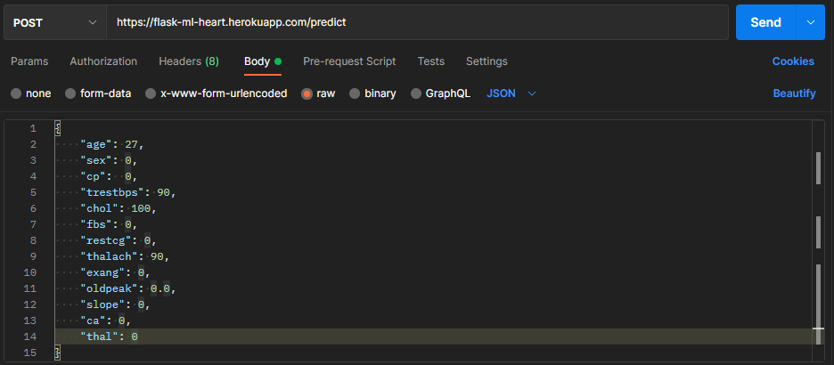
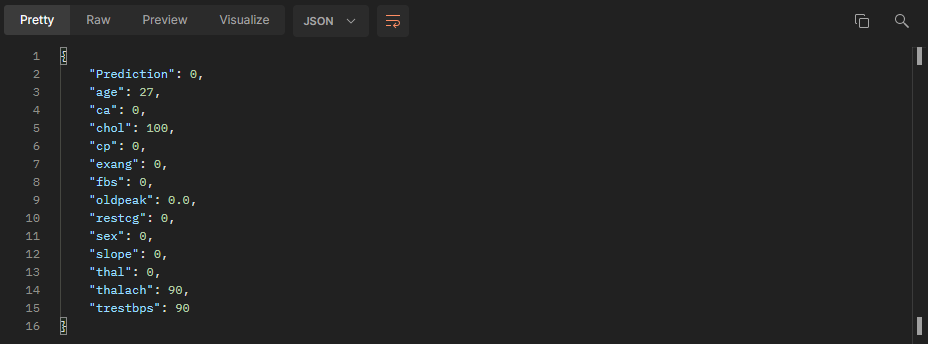

API Machine Learning
Description
API in which a machine learning model works, predicts according to some data if a person is prone to heart disease. The creation of the model was done with Sklearn using the GradientBoostClassifier algorithm, a PCA algorithm was also used to reduce the dimensionality of the features and avoid overfiting
Repositories
Usage
-
Complete the data parameters through the body using json.
- age: Age in years of the patient
- sex: 1 - Man, 2 - Woman
- cp: Type of value in the chest among 4 possible values. (1 - Angina - typical, 2 - Atypical angina, 3 - Non-anginal pain, 4 - Asymptomatic pain)
- trestbps: Resting blood pressure
- chol: Cholesterol measurement
- fbs: Fasting blood sugar
- restcg: Electrocardiography results at rest
- thalach: Maximum heart rate reached
- exang: Did you develop angina after exercising?
- oldpeak: Exercise-Induced ST Depression Relative to Rest (More - information here. https://litfl.com/st-segment-ecg-library/)
- slope: Slope of the ST segment peak
- ca: Number of major blood vessels colored by fluoroscopy
- thal: Thalassemia: 1 - Normal, 2 - Fixed defect, 3 - Reversible defect
Example:
{ "age": 13, "sex": 1, "cp": 1, "trestbps": 140, "chol": 221, "fbs": 0, "restcg": 1, "thalach": 164, "exang": 1, "oldpeak": 0.0, "slope": 2, "ca": 0, "thal": 2 } -
Make a POST request to the route /predict
 -
Your response should look like this
